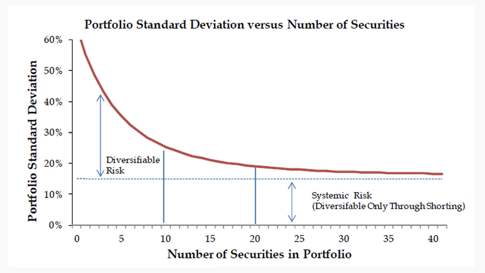
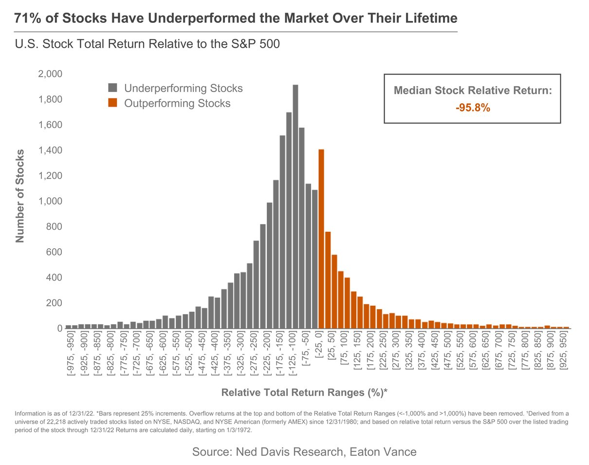
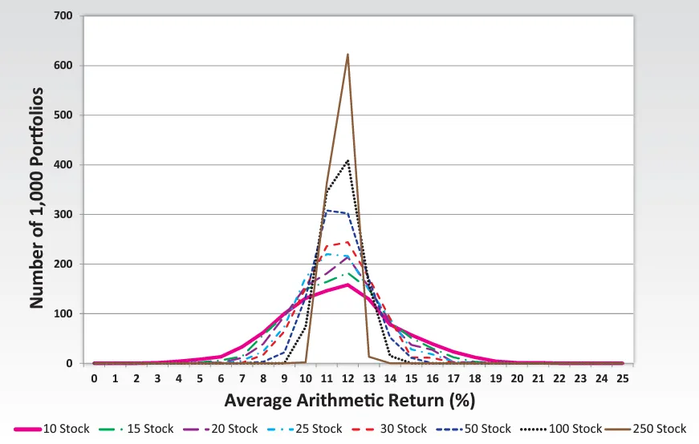
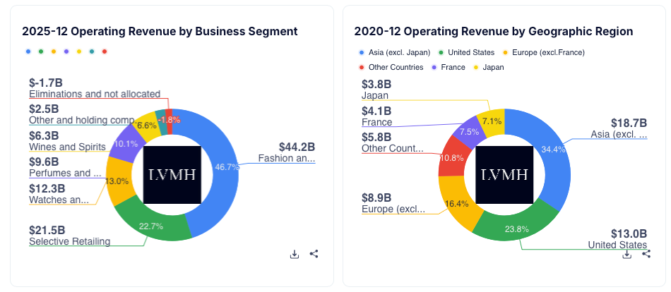
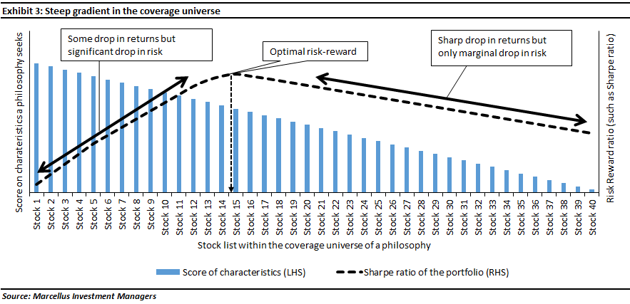

"Ne mettez pas tous vos œufs dans le même panier."
C'est incontestablement le conseil financier le plus martelé au monde. L'industrie de la gestion d'actifs, les banquiers de réseau et les conseillers financiers traditionnels en ont fait un dogme absolu, une véritable religion fondée sur la peur. Leur solution universelle pour vous "protéger" du risque ? Vous faire acheter des fonds tentaculaires contenant 500, voire 3 000 entreprises différentes, en vous promettant la tranquillité d'esprit à long terme.
Pourtant, permettez-moi une analogie très simple pour déconstruire ce mythe. Imaginez que vous assistiez à une grande course hippique. Votre objectif absolu est de maximiser vos gains et de réaliser la meilleure performance de la journée. Allez-vous parier un petit peu d'argent sur l'intégralité des 50 chevaux présents sur la ligne de départ, du pur-sang champion du monde jusqu'au vieux poney boiteux, sous prétexte de "diversifier vos risques" ? Évidemment que non. C'est la garantie mathématique de diluer vos gains et de perdre votre capital. Un parieur professionnel va analyser les statistiques, observer l'endurance, étudier l'historique de victoires, et parier massivement sur les 2 ou 3 meilleurs chevaux. Ceux qui ont un avantage concurrentiel injuste et qui ont déjà prouvé qu'ils étaient des champions. En bourse, la logique est rigoureusement identique.
Les leçons des Maîtres 💬
"Mettez tous vos œufs dans le même panier, et surveillez ce panier comme le lait sur le feu."
— Mark Twain / Andrew Carnegie
"La diversification est une protection contre l'ignorance. Elle n'a que très peu de sens pour ceux qui savent ce qu'ils font."
— Warren Buffett
"L'idée que la sur-diversification a du sens pour quiconque sait réellement analyser une entreprise est absurde. Pariez gros quand vous avez les probabilités de votre côté."
— Charlie Munger
Dans ce chapitre, nous allons balayer les idées reçues de la finance traditionnelle et vous démontrer, études quantitatives à l'appui, pourquoi la stratégie StocksPickeur repose sur un pilier inébranlable : la concentration extrême sur vos meilleures convictions.
1. Le Piège insidieux de la "Diworsification"
Le légendaire gérant de fonds Peter Lynch a inventé le terme génial de "Diworsification" (une contraction entre diversification et worse, qui signifie "pire" en anglais). Ce concept fondamental explique qu'à partir d'un certain seuil d'entreprises en portefeuille, ajouter de nouvelles actions ne réduit absolument plus votre niveau de risque, mais se contente de diluer fatalement vos rendements potentiels.

Observez très attentivement le graphique de l'écart-type ci-dessus. La volatilité (le risque de faillite lié à une seule entreprise) chute littéralement à la verticale lorsque vous passez d'une seule action à un portefeuille de 6 ou 10 actions. Votre portefeuille se stabilise et devient résilient. Mais regardez ce qui se passe de manière flagrante juste après : la courbe devient totalement plate. Que vous possédiez 15, 100 ou 500 actions, vous restez exposé au "Risque Systémique" inhérent au capitalisme (les récessions mondiales, les guerres, les hausses brutales des taux d'intérêt de la FED). Aucune diversification au monde ne peut éliminer le risque macroéconomique.
La conclusion est sans appel, mathématique et rationnelle : Acheter la 20ème ou la 30ème action de votre liste ne vous protègera pas d'un krach boursier. Cela vous forcera simplement à allouer votre capital durement gagné à votre 30ème meilleure idée, au lieu de renforcer votre 1ère, et absolue, meilleure conviction. Pourquoi investir dans le "Moyen" quand le "Génial" est disponible ?
Pourquoi les professionnels sur-diversifient-ils alors ? 👔
Si la concentration est mathématiquement supérieure, pourquoi les gérants de fonds achètent-ils 200 actions ? La réponse est le Tracking Error (le risque de s'éloigner de l'indice de référence). Un gérant de fonds ne cherche pas à maximiser votre performance, il cherche à protéger son emploi. S'il concentre son fonds sur 8 actions et qu'il sous-performe l'indice pendant une seule année, ses clients retirent leur argent et il est licencié. Pour survivre, il est obligé de "copier" l'indice en achetant les mêmes 200 actions. En tant qu'investisseur particulier, vous avez un avantage structurel déloyal : vous n'avez de comptes à rendre à personne. Vous pouvez vous permettre d'être concentré.
2. Le Piège Psychologique : Accepter la Volatilité (Le prix de l'Alpha)
Il est crucial de faire ici une pause sur l'aspect mental de l'investisseur. Un portefeuille hautement concentré implique obligatoirement d'accepter une volatilité plus marquée. Si vous possédez seulement 6 ou 8 actions et que l'une d'entre elles publie des résultats trimestriels qui déçoivent les analystes à court terme, elle peut chuter de 10% ou 15% en une seule séance. L'impact sur votre portefeuille global sera visible immédiatement.
C'est le piège psychologique de la concentration : la peur panique du "rouge" sur l'écran. L'écrasante majorité des investisseurs diversifient à l'extrême non pas pour des raisons de stratégie financière, mais pour leur simple confort émotionnel. Ils préfèrent la certitude d'un portefeuille léthargique qui ne bouge presque pas, plutôt que l'incertitude d'un portefeuille hautement performant qui fluctue.
Mais rappelez-vous des axiomes du Module précédent : la volatilité des cours boursiers n'est pas le risque ! Le véritable risque, c'est la perte permanente en capital due à la faillite d'une entreprise médiocre ou endettée. La baisse temporaire des cours d'un monopole de très haute qualité (qui continue de générer des milliards de Free Cash Flow) n'est pas un drame ni une erreur. C'est une opportunité d'arbitrage exceptionnelle que le marché vous offre pour renforcer votre meilleure conviction à un prix bradé.
3. La Réalité Statistique : Le capitalisme est un jeu brutal
Pourquoi est-il si financièrement dangereux d'acheter "tout le marché" ? Parce que la bourse est régie par la loi de Pareto (la règle des 80/20), poussée à son extrême le plus absolu. La théorie de la destruction créatrice de Joseph Schumpeter est une réalité quotidienne : la quasi-totalité de la richesse mondiale générée en bourse ne provient que d'une infime poignée d'entreprises d'exception, tandis que la vaste majorité de la cote stagne, se fait disrupter, ou s'effondre dans l'oubli.

Ces données institutionnelles sont glaçantes pour les partisans de l'hyper-diversification. Si vous achetez 100 entreprises au hasard, ou via un ETF équipondéré large pour "étaler vos risques", les statistiques historiques prouvent formellement que plus de 70 d'entre elles vont lamentablement sous-performer. Elles agiront comme de gigantesques boulets pour votre performance globale, et détruiront silencieusement la valeur créée par vos rares gagnants.
La célèbre étude du professeur Hendrik Bessembinder a même prouvé de manière empirique que seulement 4 % des actions américaines sont responsables de l'intégralité de la richesse nette (la surperformance par rapport aux bons du trésor) créée à Wall Street depuis 1926. Les indices mondiaux (comme le MSCI World) ne montent sur le long terme que parce qu'ils sont portés à bout de bras par une poignée de monopoles inarrêtables.
Notre philosophie d'investissement est donc d'une limpidité absolue : En concentrant délibérément votre portefeuille sur l'Excellence (le Quality Investing), vous cherchez à identifier et capturer ces fameux 4 %, tout en filtrant impitoyablement les 96 % d'entreprises médiocres qui encombrent les indices boursiers.
4. Concentration = Alpha (La capture de la Surperformance)
Pour battre durablement le marché (générer ce que l'on appelle de l'Alpha), il y a une condition mathématique indépassable : votre portefeuille doit différer significativement de la composition de l'indice de référence (ce que les professionnels appellent "l'Active Share"). Plus vous ajoutez de lignes à votre portefeuille, plus celui-se met à mimer la composition exacte du marché. Vous vous transformez alors en un ETF "déguisé", coûteux à gérer, et mathématiquement incapable de surperformer.

Le tableau d'analyse ci-dessus démontre visuellement la puissance de la conviction. Un portefeuille extrêmement resserré offre le "Maximum Return" (rendement maximal) le plus spectaculaire. Il est la seule configuration capable d'exploiter à plein régime la croissance exponentielle des entreprises dominantes sans que celle-ci ne soit noyée dans la masse.
5. La Vraie Diversification est Intrinsèque (Les Monopoles Mondialisés)
La critique la plus éculée (et souvent assénée avec arrogance par ceux qui n'ont jamais pris la peine d'analyser un bilan comptable) contre la concentration est la suivante : "Mais si tu n'as que 8 actions en portefeuille, tu prends un risque de faillite insensé, tu n'es pas du tout diversifié géographiquement ou sectoriellement !" C'est un raisonnement académique qui date des années 1980.
Dans l'économie digitalisée et interconnectée d'aujourd'hui, acheter une entreprise de très haute qualité dotée d'un Moat (un avantage concurrentiel durable), c'est acheter une entité nativement, structurellement et commercialement mondialisée. L'étiquette géographique du siège social n'a plus aucune pertinence économique :
- Prenez LVMH : L'entreprise est officiellement cotée à la Bourse de Paris, mais la France ne représente qu'une infime fraction de ses ventes. Elle tire la véritable puissance de sa croissance des nouvelles classes moyennes en Asie, des flux touristiques au Japon et des consommateurs fortunés aux États-Unis.
- Prenez Microsoft : Son écosystème Cloud (Azure) et ses abonnements logiciels irriguent littéralement l'ensemble des continents et perfusent l'intégralité des secteurs de l'économie réelle (de la boulangerie locale aux complexes hospitaliers, en passant par les banques internationales et les agences gouvernementales).

La réalité économique est fascinante : Si vous possédez 6 à 10 monopoles mondiaux, minutieusement sélectionnés à travers quelques méga-secteurs structurants (Technologie de l'information, Santé, Luxe, Réseaux de Paiement), vous possédez de facto une part de la croissance de l'économie mondiale. Votre portefeuille hyper-concentré est infiniment plus robuste et diversifié face aux chocs asymétriques qu'un portefeuille éparpillé sur 80 petites capitalisations locales totalement dépendantes des décisions de taux d'intérêt de leur banque centrale domestique.
6. Le "Sweet Spot" : Mes Conseils Personnels (De 6 à 10 lignes max)
Si l'industrie financière traditionnelle (et les quelques études académiques qui osent s'aventurer sur le terrain de la concentration) situe le sommet théorique de l'optimisation risque/rendement autour de 10 à 15 actions, ma philosophie d'investisseur particulier StocksPickeur est beaucoup plus radicale, exigeante et assumée.

Mon conseil personnel, mon standard d'excellence et ma règle d'or est la suivante : Un portefeuille boursier d'élite doit contenir un minimum vital de 6 entreprises, et un maximum absolu et infranchissable de 10 entreprises. Le nombre de lignes dans un portefeuille boursier n'est pas une science exacte, mais à mes yeux le nombre doit se situer entre 6 et 10.
Pourquoi m'imposer une telle rigueur spartiate ? Pour une question de limite cognitive et temporelle inhérente à la nature humaine. La méthodologie du Quality Investing est implacable : elle exige de connaître ses entreprises sur le bout des doigts, de lire religieusement leurs rapports annuels (les 10-K), de décortiquer les bilans financiers trimestre après trimestre, de surveiller la moindre fissure dans leur avantage concurrentiel, et d'écouter les conférences de presse des PDG.
Le cerveau humain, même le plus brillant ou le plus entraîné, est formellement incapable d'assurer ce niveau de suivi qualitatif et approfondi sur 20 ou 25 entreprises différentes tout en conservant une vie professionnelle et personnelle à côté. Mieux vaut connaître parfaitement l'anatomie intime et la mécanique de génération de cash de 8 entreprises exceptionnelles, que de survoler avec une légèreté coupable les chiffres de 30 entreprises moyennes.
À titre strictement personnel, je détiens actuellement très exactement 6 entreprises dans mon propre portefeuille. C'est, pour moi, le point de bascule de l'équilibre absolu. Cette ultra-concentration me permet de dormir sur mes deux oreilles car je maîtrise chaque risque associé à mes entreprises. Elle m'offre une lecture limpide et instantanée de mon allocation sectorielle. Mais surtout, elle me donne le pouvoir d'allouer des montants massifs sur mes convictions les plus profondes pour faire fructifier mon capital à des taux bien supérieurs à la léthargie moyenne des indices boursiers mondiaux.
🔑 Ce qu'il faut retenir
La sur-diversification tue la performance : pour gagner en bourse comme aux courses, filtrez la médiocrité et pariez massivement sur les très rares champions qui ont déjà fait leurs preuves.
La règle d'or du Quality Investing se situe entre 6 et 10 actions maximum : c'est le seul moyen de conserver un contrôle cognitif total sur vos entreprises et d'optimiser vos rendements.
La volatilité inhérente à cette ultra-concentration n'est pas un danger, mais le prix psychologique (et la meilleure opportunité de renforcement) pour bâtir une surperformance hors norme sur le long terme.